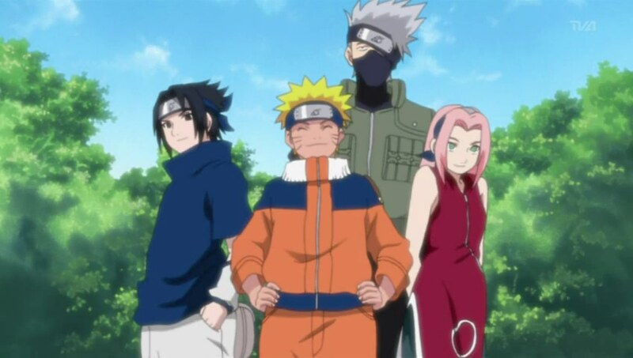

Saiba tudo sobre Naruto!
História
Naruto Uzumaki é um jovem ninja da Vila da Folha que cresceu sendo rejeitado por quase todos ao seu redor, sem entender completamente o motivo. Desde bebê, ele carrega dentro de si a Raposa de Nove Caudas, uma criatura extremamente poderosa que atacou a vila anos antes, e por isso os moradores o evitam por medo e preconceito. Mesmo assim, Naruto desenvolve uma personalidade determinada, barulhenta e cheia de energia, sempre buscando reconhecimento e sonhando em se tornar Hokage, o líder da vila, para finalmente ser respeitado. Ao longo de sua jornada como ninja, ele forma laços importantes com seus companheiros de equipe, enfrenta inimigos perigosos e amadurece tanto em força quanto em caráter. Sua história mistura ação, superação e amizade, mostrando como alguém desacreditado pode crescer e conquistar seu lugar através de esforço e persistência.
Personagens
Naruto Uzumaki
Protagonista da história. Um ninja determinado, energético e que nunca desiste dos seus objetivos. Ele busca sempre melhorar e proteger seus amigos e sua vila.
Sasuke Uchiha
Rival de Naruto. Um ninja extremamente talentoso e forte, que possui um passado marcado por perdas e busca vingança durante boa parte da história.
Sakura Haruno
Integrante do Time 7. Inteligente, focada e com grande habilidade em ninjutsu médico, além de evoluir muito em força ao longo da história.
Kakashi Hatake
Integrante do Time 7. Experiente, calmo e extremamente habilidoso, conhecido por sua inteligência em batalhas e seu Sharingan.
Esses personagens fazem parte do Time 7:

Habilidades
Lista de Técnicas
- Rasengan
- Clone das Sombras
- Modo Sábio
- Rasenshuriken
- Modo Kurama
- Invocação dos Sapos
- Controle de Chakra
- Taijutsu
- Modo Baryon
- Chakra da Kurama
- Técnicas de Selamento